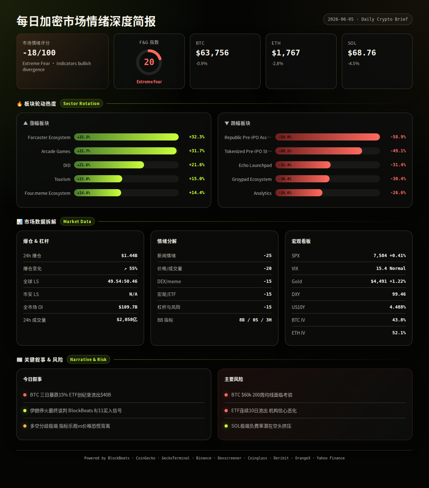
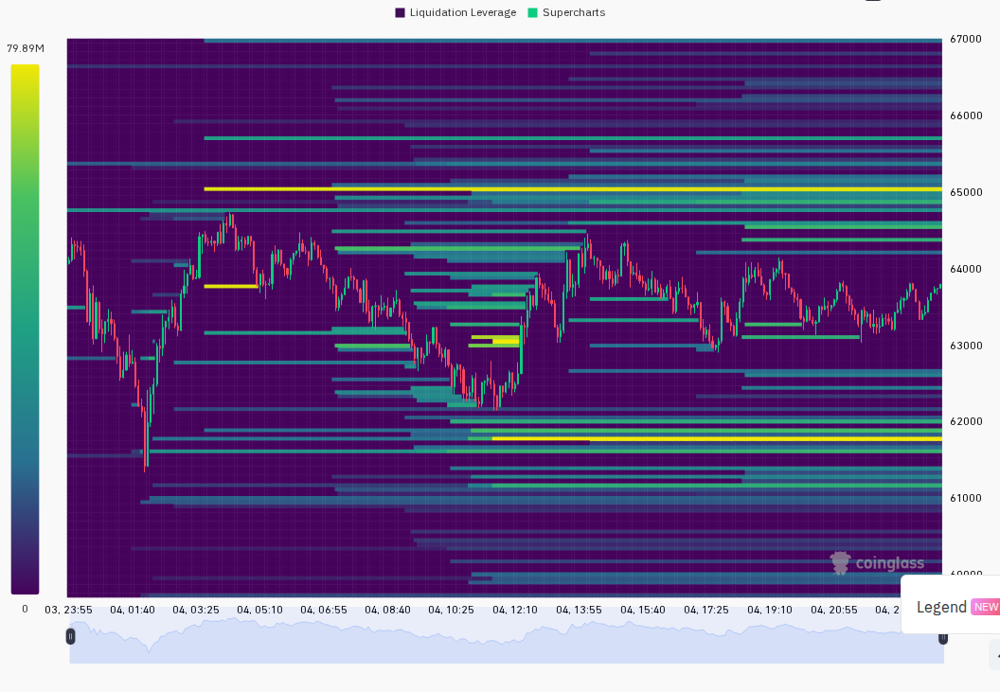
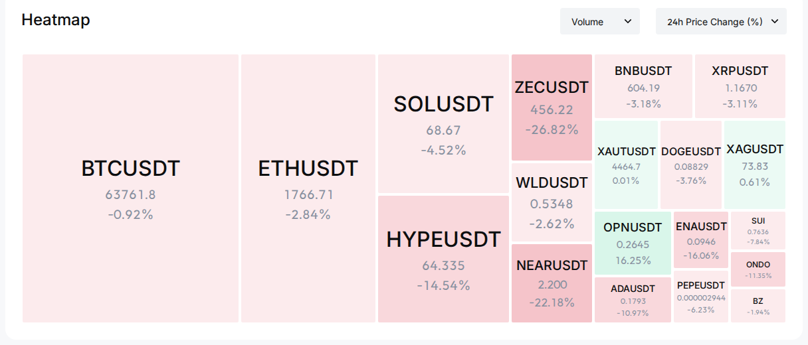

===SUBTITLE===
BTC crash 15% in 3 days, V-bounce above $64k, $1.4B liquidations, F&G at Extreme Fear 20, Iran ceasefire hopes rise
每日加密市场情绪深度报告
2026年6月5日 · 08:00 UTC+8
=== 第一段：叙事与风险面 ===
市场经历近一年最剧烈三日暴跌后出现 V 型反弹，BTC 从 $61,000 区域回升至 $64,000 上方。核心驱动来自三股力量交织：策略性抛售恐惧引发连锁清算、伊朗停火谈判进展带来地缘风险缓解、以及 SpaceX 万亿美元 IPO 引发的资金轮动效应。F&G 跌至 20（极度恐惧），创本轮周期新低，但 BlockBeats 11 项市场指标中 8 项给出买入信号，流动性指标显示主力控盘成本已进入易成底部区域。（BlockBeats, CoinGecko, Coinglass, OrangeX, analysis）
24h变化: F&G 20(极度恐惧) | BTC ↘0.9% 收$63,756 | ETH ↘2.8% 收$1,767 | SOL ↘4.5% 收$68.76 | VIX 15.4(正常) | 爆仓量 ↗55% (multi-source)
BTC/ETH/SOL — 三日暴跌与 V 型反弹
信息 1: BTC 三日内从 $74,000+ 暴跌 15% 至 $61,000 区域，触及 200 周均线关键支撑 $60,000，随后 V 型反弹至 $64,000 上方。策略性抛售恐慌是核心导火索，市场担忧 MicroStrategy 等持币大户被迫减仓偿债引发连锁反应。（BlockBeats）
信息 2: 全网爆仓在 12 小时内一度达到 $1.03B，24 小时内攀升至 $1.787B 峰值，最终 24h 清算总额 $1.438B，多头占比 49.5%。最大单笔爆仓为 Hyperliquid 上一名交易者被清算 $16.3M+，此前为 ZEC 最大多头。（BlockBeats, Coinglass）
信息 3: 休眠 3 年钱包收到 10,000 ETH 后立即全部卖出换取 1,780 万 USDC。ConsenSys 前大使将 20,426 ETH 分发至 10 个新地址。ETH 财政部公司 FG Nexus 转移 10,000 ETH 至 Galaxy Digital，账面亏损超 $8,500 万。（BlockBeats）
ETF / 宏观 / 监管
信息 4: 美国现货 BTC ETF 单日净流出 $3.97 亿，BlackRock IBIT 领衔流出。过去 10 天黑石 ETF 累计净流出 30,119 BTC 和 161,829 ETH。ETF 月流出总额达 $40 亿，为历史最高月度流出。（BlockBeats）
信息 5: 标普 500 上涨 0.41% 至 7,584，纳指在"抄底"情绪中创下新高，但半导体板块暴跌——Broadcom 因 AI 芯片收入指引不及预期暴跌 15%，Micron 跌 8%。道琼斯盘中创历史新高。（BlockBeats, Yahoo Finance）
信息 6: 现货黄金突破 $4,500/盎司创历史新高，24h 涨 1.22%。全球央行 4 月恢复净购金，中国央行连续 18 个月增持。黄金与 BTC 走势负相关凸显当前市场风险偏好极度低迷。（BlockBeats, Yahoo Finance）
地缘政治 — 伊朗与中东
信息 7: 特朗普表示美国正在进行结束伊朗战争的"最终谈判"，伊朗革命卫队提出包括黎巴嫩在内的全面停火为先决条件。伊朗冻结资产协议进入最后阶段。美国财长耶伦称伊朗冲突已"暂停"。（BlockBeats）
SpaceX IPO 与 AI 狂热
信息 8: SpaceX 发布 17 分钟 IPO 路演视频，计划发行 555,555,555 股 A 类普通股，6 月 12 日上市，估值 $1.77 万亿，为史上最大 IPO。Coinbase 已上线 SPCX Pre-IPO 永续合约。大量加密资金被吸引流向 AI/SpaceX 主题。（BlockBeats）
信息 9: Bitwise 顾问指出 BTC 抛售并非因 MicroStrategy，而是资金轮动至 SpaceX、Anthropic 等热门标的。Michael Saylor 也表示 BTC 下跌是资金流向 AI 的轮动而非对 BTC 的损害。（BlockBeats）
板块轮动
信息 10: CoinGecko 板块数据：涨幅前三为 Farcaster 生态 +32.3%、Arcade Games +31.7%、DID +21.6%。跌幅前三为 Republic Tokenized Pre-IPO 资产 -58.9%、Tokenized Pre-IPO 股票 -49.1%、Echo Launchpad -31.4%。预 IPO 代币化资产暴跌与 SpaceX 真实 IPO 形成鲜明对比。（CoinGecko）
预测市场 / Polymarket
信息 11: Polymarket 对"Strategy 比特币卖出时间"市场的裁决结果引发社区广泛愤怒。Polymarket 同时怀疑竞争对手 Kalshi 对其纽约办公室及员工进行窃听，已启动调查。（BlockBeats）
风险 1: $60,000 为 BTC 200 周均线关键支撑，若再次测试并跌破，可能触发 $609M 以上多头清算。 → 观察: 若 BTC 守住 $62,000 且成交量放大，则底部确认概率上升；失效条件: 若缩量阴跌则假突破风险高。（BlockBeats, analysis）
风险 2: ETF 连续 10 天大幅流出为机构信心严重受损信号，5 月 ETF 月流出 $40 亿创纪录。 → 观察: 若明日 ETF 数据转正流入，则是情绪反转先行指标；失效条件: 若流出扩大则下跌趋势延续。（BlockBeats)
风险 3: 超半数 BTC 持仓处于未实现亏损状态，历史上这是熊市底部指标但也可成为进一步抛售的燃料。 → 观察: 若短期持有者加速向长期持有者转移（链上数据显示已开始在转移），则底部信号增强；失效条件: 若短期持有者选择割肉离场则形成二次踩踏。（BlockBeats, analysis）
风险 4: SOL 永续合约资金费率在 Binance(-0.96%)、Bybit(-1.36%) 等主流交易所全面深度负值，空头拥挤。 → 观察: 极度负费率可能是反向指标（空头挤压风险），若 SOL 反弹至 $72+ 可能引发大规模空头回补；失效条件: 若 SOL 继续下破 $65 则空头趋势占优。（CoinGecko, analysis）
风险 5: 地缘政治二象性——伊朗停火若成功将利好风险资产，但任何反复都可能导致油价和美元急升。 → 观察: 关注俄美阿拉斯加谈判进展以及以色列-黎巴嫩停火实际执行；失效条件: 若任何一方撕毁协议则恐慌情绪重现。（BlockBeats）
风险 6: 旧款 BTC 矿机已接近关机价，若 BTC 继续走弱可能引发矿工抛售潮。 → 观察: 关注哈希率和矿工 BTC 余额变化；失效条件: 若 BTC 反弹至 $68,000 以上则挖矿经济性显著改善。（BlockBeats）
非财务建议声明: 本报告仅提供市场数据和情绪分析，不构成任何买卖建议。
6 月 5 日 — 美国当周初请失业金人数（上周 22.5 万，创 2 月以来新高）→ 若继续上升则美联储鸽派预期增强（利好风险资产）。 (BlockBeats, analysis)
6 月 5 日 — Binance 上线 ZEST 和 BTW 永续合约 → 小市值代币流动性事件，可能引发短期波动。(BlockBeats)
6 月 6-7 日 — Binance 股票交易暂停（合作券商系统升级）→ 代币化股票交易短暂中断，对相关板块有短期影响。(BlockBeats)
6 月 8 日 — BTC/ETH 周度期权到期 → 关注最大痛点价位附近的磁吸效应。(analysis)
6 月 12 日 — SpaceX IPO 正式上市 → 史上最大 IPO，可能继续吸引加密市场资金外流，但若上市初期表现不佳，资金可能回流加密。(BlockBeats, analysis)


=== 第二段：数据与技术面 ===
综合评分: -18/100
5 项细分评分：
新闻情绪: -25/100 — BTC 三日暴跌 15%、ETF 创纪录月流出 $40 亿、矿机关机价、Broadcom 暴跌、Polymarket 裁决争议。伊朗停火进展和 SpaceX IPO 兴奋未能抵消恐慌主导。（BlockBeats）
价格/成交量: -20/100 — BTC/ETH/SOL 全线下跌但均从日低显著反弹。BTC 24h 振幅 5.5%，成交量较昨日 +21.8% 显示恐慌性换手活跃。V 型反弹形态暗示短期底部买盘出现。（Binance, CoinGecko, Coinglass）
DEX/meme 活跃度: -15/100 — Solana 链 DEX 新池无满足 $50k 流动性 + $100k 交易量条件者，Meme 活跃度降至冰点。趋势池均为小微盘，最大仅 $8M 成交量。链上情绪极冷。（GeckoTerminal）
宏观/ETF/流动性: -15/100 — ETF 创纪录流出对冲了 SPX 微涨和 VIX 低位的正面信号。黄金创新高 $4,500（风险厌恶），DXY 和 US10Y 稳定但 BOJ 6 月加息讨论带来亚洲流动性收紧风险。（BlockBeats, Yahoo Finance）
杠杆与风险: -15/100 — 24h 爆仓 $1.438B 且 +55% 增幅显示去杠杆仍在进行。OI 下降 7% 符合去杠杆过程。SOL 出现极端负费率（空头拥挤），BTC/ETH 费率分化。整体杠杆风险仍偏高但正在释放。（CoinGecko, Coinglass, analysis）
BlockBeats 市场脉动指数完整解码（11 项指标）：
· 整体市场流动性指数: Buy
· 比特币流动性指数: Buy
· 以太坊流动性指数: Buy
· 过去 24 小时累积比特币流动性指数: Buy
· 整体市场流动性（以比特币为单位）: Buy
· 合约多空比偏离指数: Hold
· 山寨币抗跌指数: Hold
· Bitfinex BTC/USD 溢价: Hold
· USDC/USDT 溢价: Buy
· Binance USDT 借贷利率: Buy
· 持仓量加权资金费率年化利率: Buy
综合: 8 Buy / 0 Sell / 3 Hold — 指标层面极为乐观，主力控盘成本指标一致显示"易成底部区域"，与价格面的恐慌和 F&G 的 20 极度恐惧形成强烈背离。历史上这种背离往往出现在阶段性底部附近，但确认需要价格突破配合。（BlockBeats, analysis）
BTC: $63,756，24h -0.9%，24h 成交量 43,516 BTC，高 $64,764 / 低 $61,384。小时线显示从 $61,384 低点连续 3 根阳线反弹至 $64,000+，随后在 $63,500-$64,200 区间盘整。期货溢价：标记 $63,789 vs 指数 $63,814，轻微折价 -$25（中性偏弱）。（Binance, CoinGecko）
ETH: $1,767，24h -2.8%，24h 成交量 647,364 ETH，高 $1,820 / 低 $1,717。小时线 V 型反转从 $1,717 反弹至 $1,800+，但反弹力度弱于 BTC，ETH/BTC 汇率继续承压。期货溢价：标记 $1,767 vs 指数 $1,768，基本平价（中性）。（Binance, CoinGecko）
SOL: $68.76，24h -4.5%，24h 成交量 4,924,725 SOL，高 $72.09 / 低 $66.80。跌幅在三大币中最大，但反弹振幅也最大（7.9%）。期货溢价：标记 $68.70 vs 指数 $68.75，基本平价（中性）。（Binance, CoinGecko）
全球市场: 总市值 $2.29 万亿，24h 交易量 $2,058 亿（现货）。BTC 市占率 55.85%。BTC.D 在过去 10 天下降了 4.85%，山寨币占比上升近 15%，但伴随的是普跌而非健康轮动。（CoinGecko, BlockBeats）
衍生品杠杆（CoinGecko 全交易所数据）:
BTC 永续：最高融资费率 MEXC +0.130%（年化 47.5%），最低 Bybit -0.248%（年化 -90.5%）。Binance +0.124%。总 OI $279.8 亿。费率分化显示多空分歧显著但整体不极端。（CoinGecko）
ETH 永续：最高融资费率 Phemex +0.961%（年化 351%），最低 HitBTC -5.01%。Binance +0.465%，Bybit -0.150%。总 OI $194.1 亿。Binance 上 ETH 费率偏高（+0.465%）显示抄底多头较为积极。（CoinGecko）
SOL 永续：最高融资费率 AscendEX +8.70%，最低 GRVT -7.00%。Binance -0.963%，Bybit -1.358%，MEXC -0.940%。总 OI $38.9 亿。⚠️ SOL 在几乎所有主流交易所呈现深度负费率，空头极端拥挤——历史上极度负费率往往是空头挤压的反向信号。（CoinGecko）
爆仓数据（Coinglass）:
24h 全网爆仓 $1.438B，较前一时段 +55.07%。多空比接近 49.54:50.46，多空双杀。BB 新闻中记录的最高峰值为 $1.787B（含当前时段早期）。爆仓规模为本轮周期最大之一，多头和空头均受重创。（Coinglass, BlockBeats）
OI 变化: 全网 OI $1,097 亿，较前一时段 -7.05%，未平仓合约在去杠杆中持续收缩。（Coinglass）
跨平台 OI 对比（BlockBeats，最近数据 6 月 2 日）:
Binance $204.9 亿 OI / $656.8 亿 24h 成交量 — 稳居第一。Bybit $102.5 亿 OI / $241.4 亿成交量。Hyperliquid $65.9 亿 OI / $112.3 亿成交量。Hyperliquid 5 月永续合约交易量占全球 CEX 市场的 6.63%，创新高。（BlockBeats）
宏观看板:
· SPX: 7,584.31，24h +0.41%，5d +0.06% — 美股韧性但板块分化严重 (Yahoo Finance)
· VIX: 15.40，处于正常区间的下沿（接近 15 的 Complacency 分界线），期权市场对美股未定价恐慌 (Yahoo Finance)
· DXY: 99.46，24h 近乎持平 +0.01，7d -0.01 — 美元极度稳定 (BlockBeats)
· US10Y: 4.488%，24h +0.003，7d +0.005 — 长端利率稳定，BOJ 6 月加息讨论形成微弱的亚洲流动性收紧预期 (BlockBeats)
· 黄金: $4,490.70/盎司，24h +1.22% — 历史新高，与 BTC 走势负相关（避险资金从 BTC 流向黄金）(Yahoo Finance, analysis)
期权波动率（Deribit）:
· BTC ATM IV: 43.75%（BTC-26JUN26-64000-C），处于正常区间（40-60%）(Deribit)
· ETH ATM IV: 52.12%（ETH-8JUN26-1775-C），处于正常区间（40-60%）(Deribit)
· ETH-BTC IV 价差: 8.37%，低于 15% 阈值 — 无山寨币投机溢价，市场整体风险偏好中性 (Deribit, analysis)
· VIX vs BTC IV: VIX 15.4 远低于 BTC IV 43.8%，加密期权市场定价的不确定性远高于美股，体现加密市场特有风险溢价 (multi-source)
在当前极度恐惧环境下，CoinGecko 趋势榜前 15 中无任何代币 24h 涨幅超过 +5%。以下基于搜索热度与 BlockBeats 叙事交叉选取关注标的，均为下跌中或盘整中的高关注度代币：
HYPE (Hyperliquid): $64.26, 24h -14.4%, 市值 $143.1 亿。催化剂: a16z 关联地址过去 4 天累积 68.7 万枚 HYPE，浮盈 $1.41 亿；Hyperliquid 5 月市占创新高 6.63%。风险: Arthur Hayes 已清仓全部 HYPE 并称下周撰文解释原因，可能引发进一步抛售；Hyperliquid 最大 ETH 多头仓位水下浮亏扩大至 $5,800 万。(CoinGecko, BlockBeats)
ZEC (Zcash): $451（Dexscreener），24h -27.9%，市值 N/A。催化剂: CoinGecko 趋势榜第 2 名，高波动引发交易兴趣；Zcash 链曾被传停摆（Arkham 澄清为浏览器更新延迟）。风险: Hyperliquid 上 ZEC 最大多头被清算 $1,630 万+，一鲸鱼在 ZEC 上做多亏损 $290 万后再次 10x 做多。(CoinGecko, BlockBeats, Dexscreener)
BONK (Bonk/Solana): $0.00000474, 24h -6.3%, 市值 $4.18 亿。催化剂: CoinGecko 趋势榜第 1 名，Meme 币中搜索热度最高；Jupiter 上线 Solana 原生预测市场可能带动生态活跃度。风险: Solana 链上 Meme 活跃度已降至冰点，新池无满足筛选条件者；Dexscreener 上 Solana 交易对流动性极低。(CoinGecko, GeckoTerminal, BlockBeats)
MON (Monad): $0.0214, 24h +4.6%, 市值 $2.53 亿。催化剂: 趋势榜中唯一上涨代币，属于新兴 L1 叙事，与 Sui/Aptos 同赛道。风险: 市值排名 152，流动性低；Dexscreener 未检索到可验证 DEX 数据。(CoinGecko)
WLD (Worldcoin): CG 趋势第 8 名，Arthur Hayes 再次喊单做多称"即将 moonshot"，但价格持续承压。风险: 依赖个人 KOL 喊单无基本面支撑，高杠杆环境下一旦反转伤害极大。(BlockBeats, CoinGecko)
ADA (Cardano): $0.179, 24h -10.9%, 市值 $66.8 亿。催化剂: 创始人宣布"短暂休息"引发市场对生态领导力真空的担忧，但同时也可能为治理改革铺路。风险: ADA 跌破 $0.20 心理关口，技术面极弱。(CoinGecko, BlockBeats)
GeckoTerminal Solana 趋势池（24h）:
· three/SOL: 24h 成交量 $8.08M，价格 +7.9%，流动性 $304k (GeckoTerminal)
· SV151/USDC: 24h 成交量 $6.61M，价格 +701%，流动性 $119k — 超高涨幅，极低流动性，极高风险 (GeckoTerminal)
· HeavyPulp/SOL: 24h 成交量 $5.08M，价格 +100.8%，流动性 $124k (GeckoTerminal)
以上三池为唯一满足 $1M+ 24h 成交量的池，且后两者流动性极低，非主流标的。
GeckoTerminal Solana 新池（48h）: 无满足 $50k 流动性 + $100k 成交量条件的新池。链上新币发行活跃度处于近期低点。(GeckoTerminal)
BlockBeats Solana 链上 Top 5 净流入:
· HYPE: 净流入 $403.2 万 (BlockBeats)
· SYRUPUSDC: 净流入 $191.9 万 (BlockBeats)
· ETH (Wormhole): 净流入 $190.6 万 (BlockBeats)
· ZEC: 净流入 $144.1 万 (BlockBeats)
· 未命名代币 (AFbX8o...): 净流入 $57.7 万 (BlockBeats)
基于上述全部数据的概率加权判断，未来 24-48 小时最可能的三种情景：
情景 1 (概率: 45%, 置信度: 中): 震荡筑底。BTC 在 $62,000-$65,000 区间盘整，消化 $1.4B+ 爆仓后的残余抛压。BlockBeats 8/11 指标买入、F&G 20 极度恐惧、矿机关机价三重信号指向底部区域，但 ETF 持续流出和资金轮动至 SpaceX AI 压制反弹高度。关键条件: BTC 不再跌破 $61,384 低点，且成交量逐步萎缩。若发生则 BTC 目标: $63,000-$65,000, ETH: $1,730-$1,820。
情景 2 (概率: 30%, 置信度: 中): 二次探底。短暂反弹后 BTC 再次测试 $60,000-$61,000 区域，触发 BlackRock 进一步 ETF 赎回和矿工抛售。超半数持仓处于亏损状态加上策略型清算恐惧可能形成负反馈螺旋。关键条件: 若 BTC 4 小时收盘价低于 $62,000 且 ETF 流出数据继续恶化。若发生则 BTC 目标: $58,000-$61,000, ETH: $1,620-$1,720。
情景 3 (概率: 25%, 置信度: 低): 挤压式反弹。SOL 极端负费率(-0.96% 至 -1.36%)引发空头挤压，SOL 领涨带动整体市场情绪反转。伊朗停火正式宣布叠加 SpaceX IPO 前资金为避险而回补加密仓位。关键条件: SOL 突破 $72 且成交量放大，伊朗停火官宣落地。若发生则 BTC 目标: $66,000-$68,000, ETH: $1,850-$1,950。
以上为基于当前数据的概率判断，不构成交易建议。当前市场处于"指标乐观 vs 价格悲观"的极端背离状态，BlockBeats 11 项指标中 0 项卖出、8 项买入，这种结构在历史上多次出现在阶段性底部附近，但背离的最终消解需要价格确认——可以是反弹也可以是继续下跌后指标转弱。（analysis）